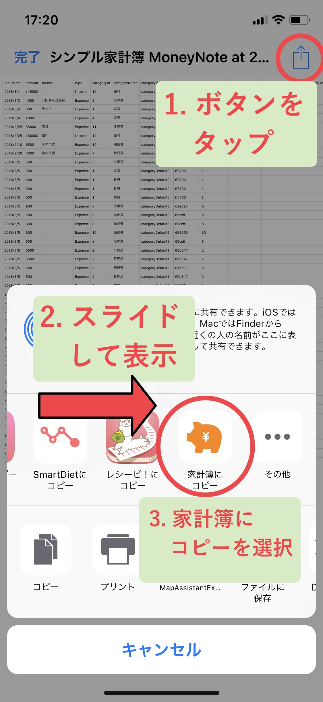

Câu hỏi thường gặp
Phần chi phí cố định đang không hoạt động tốt?
Chi phí cố định sẽ được kích hoạt thành dữ liệu vào ngày đã thiết lập.Vì vậy, Khi chưa đến ngày và không đủ điều kiện thì bạn sẽ không thể xác nhận trên calendar.
Làm thế nào để tôi có thể ghi lại số tiền hiện có?
Bạn có thể ghi lại số tiền mình có bằng cách thiết lập số dư ban đầu.Từ màn hình "Khác" của App hãy chọn "Thiết lập số dư ban đầu" rồi nhập vào số tiền tiết kiệm hiện tại ở đây.
Sau đó, Tại màn hình "Khác" Chọn ON phần "Hiển thị Số dư ở thông báo".
Từ đó, ở màn hình Report, mục "số dư" sẽ được hiển thị.Số tiền này sẽ thể hiện số tiền bạn có hiện tại.Mỗi khi bạn ghi lại chi tiêu thì số dư trên màn hình thông báo sẽ giảm nên bạn có thể sử dụng nó như là số tiền mình có.Nhất định hãy thử chức năng này nhé
Tôi có thể đồng bộ Iphone và Ipad không ?
Rất xin lỗi vì hiện tại đang không thể dùng chung được.
Tuy nhiên bạn có thể sử dụng tiếp dữ liệu đang nhập giữa chừng.Vui lòng xem mục "Thay đổi loại máy" ở phần Trợ giúp bên dưới.
Tại sao màn hình nhập và thông báo lại trắng xóa thế ?
Chúng tôi rất xin lỗi vì sự bất tiện này.
Lỗi màn hình bị trắng giống với lỗi đôi khi phát sinh quảng cáo,chúng tôi sẽ sửa lại vào lần cập nhật tiếp theo.
Để nhập vào nhanh chóng, bạn có thể nhập đăng ký mới bằng cách nháy đúp hoặc bấm giữ vào ngày tương ứng ở màn hình calendar nên vui lòng sử dụng ở mục đó giúp tôi
Rất xin lỗi. Chúng tôi sẽ sửa lại lỗi này vào lần update tiếp theo.
Tại sao tôi không thể xem được thu chi theo từng danh mục trong một năm?
Xin lỗi. Hiện tại không thể xem được. Tuy nhiên,do nhận được nhiều yêu cầu nên chúng tôi cũng đang cân nhắc sẽ phát triển chức năng này trong thời gian tới.Hiện vẫn chưa rõ thời gian cụ thể nhưng chúng tôi sẽ đối ứng nên vui lòng chờ thêm chút nữa.
Phần thanh toán bằng credit card không đưa vào được à?
Xin lỗi.Hiện tại chưa thực hiện được.Vì việc rút tiền ở credit cart cũng phức tạp nên trong app này,chúng tôi đề xuất hai phương thức thanh toán bằng credit card. Đó là đăng ký thanh toán thông thường với những cái đã thanh toán vào ngày hôm đó hoặc đăng ký vào ngày rút tiền ở "rút tiền từ card".
Làm thế nào để nhập vào từ calendar?
Bạn có thể nhập vào thu chi của ngày hôm đó bằng cách chọn ngày trên lịch rồi nháy double tap hoặc bấm giữ vào ngày đó.
Khi đổi loại máy mà vẫn muốn dùng nguyên như cũ thì phải làm gì?
Bạn hãy tap vào "Data Backup/Khôi phục" từ màn hình "Khác" trong App.
Sau đó tap vào "xuất dữ liệu" rồi tap vào "Xuất file"
Sau đó màn hình gửi mail sẽ hiển thị, nhập vào địa chỉ mail người nhận rồi gửi mail đó.
Địa chỉ mail này phải là địa chỉ email có thể nhận được trên Iphone khi thay đổi loại máy mới. Tùy vào từng dịch vụ mail, ví dụ như Gmail, đôi khi cũng có trường hợp bị xử lý là thư rác nên cần chú ý kiểm tra cả ở mục thư rác khi không thấy thư đến.
Tiếp theo, thực hiện thao tác trên Iphone mới sau khi thay đổi loại máy.
Tải sẵn mới ứng dụng này trên máy Iphone mới.
Sau đó, khởi động App Mail rồi mở mail vừa được gửi lúc trước.
Ở File đính kèm, sẽ có File được ghi là sổ kế toán gia đình ví dụ như là MoneyNote at 2018_12_25.csv.
Khi bạn tap vào File này để mở thì sẽ hiển thị màn hình lựa chọn và hãy bấm vào button ở phía trên bên phải.
Sau đó, khi vuốt sang trái phần Icon thì sẽ xuất hiện Icon "Copy ở sổ kế toán gia đình".
Khi bạn tap vào đây rồi chọn "Ghi đè dữ liệu của File CSV " ở App này thì sẽ hoàn thành chuyển dữ liệu.

Làm thế nào để điều chỉnh thông báo vào ngày có lương?
Chọn "Thiết lập ngày bắt đầu của tháng" từ màn hình "Khác" trong App rồi thiết lập ngày đó là ngày có lương thì như thế nào? Bạn cũng có thể thiết lập ngày cả khi ngày có lương là ngày nghỉ.
Có thể nhập vào tiền tiết kiệm hiện tại không?
Bạn có thể nhập vào tiền tiết kiệm bằng cách thiết lập số dư ban đầu. Chọn "Thiết lập số dư đầu kỳ" từ màn hình "Khác" của App rồi nhập số tiền tiết kiệm hiện tại ở đây. Sau đó, Chọn ON phần" hiển thị Số dư ở phần thông báo" trên màn hình "Khác". Bây giờ bạn có thể nhập vào sổ kế toán gia đình dựa trên số tiền tiết kiệm.
Về việc nhập
Làm thế nào để xóa dữ liệu đã nhập vào?
Mở màn hình calendar, chọn dữ liệu tương ứng từ danh sách bên dưới rồi bấm vào button xóa ở phía dưới bên trái. Hoặc là bạn có thể xóa dễ dàng bằng cách vuốt dữ liệu cần xóa sang trái ở trên màn hình danh sách.
Làm thế nào để nhập vào phần ngày trong quá khứ?
Hãy tap vào phần ngày trên màn hình nhập vào.Bạn có thể đăng ký dữ liệu trong quá khứ sau khi chọn ngày quá khứ. Ngoài ra, cũng có thể đăng ký dữ liệu của ngày hôm đó bằng cách mở màn hình calendar rồi nháy đúp hoặc bấm giữ lâu vào vị trí ngày mà bạn muốn đăng ký.
Làm thế nào để hiệu suất nhập vào tốt hơn
Bật ON phần "chế độ hỗ trợ nhập liên tục" trên màn hình "Khác" của App.Nhờ đó, khi nhập dữ liệu ở màn hình nhập vào thì keyboard sẽ tự động được hiển thị sau khi nhập.Từ đó, chọn category, sau khi nhập số tiền, không đóng keyboard mà chỉ bấm vào button nhập vào ở phía trên bên phải thì sẽ đăng ký được nên có thể nhập vào liên tiếp.
Có thể tự động nhập vào thu chi đã quyết định sẵn không?
Có. Hãy sử dụng chức năng thu chi cố định. Chọn "thiết lập chi phí cố định-thu nhập cố định" ở màn hình "Khác" trong App rồi tap vào dấu ＋ ở phía trên bên phải để có thể đăng ký chi phí cố định. Hãy thiết lập số tiền bị trừ tự động của mỗi tháng và của tiền lương.
Ngoài ra, chi phí cố định được áp dụng khi đến ngày tương ứng nên bạn có thể sử dụng cả chức năng đăng ký tự động ngày trong tương lai.
Chế độ hỗ trợ nhập liên tiếp là gì?
Khi bật ON chức năng này, keyboard sẽ tự động được hiển thị trên màn hình nhập vào sau khi nhập dữ liệu. Từ đó, chọn category, sau khi nhập số tiền, không đóng keyboard mà chỉ bấm vào button nhập vào ở phía trên bên phải thì sẽ đăng ký được nên có thể nhập vào liên tiếp.
Về calendar
Làm thế nào để thay đổi thứ bắt đầu?
Chọn "thay đổi ngày bắt đầu trên calendar" từ màn hình "Khác" của App rồi có thể thiết lập ngày mong muốn.
Làm thế nào để thay đổi ngày kết thúc và ngày bắt đầu của tháng?
Từ màn hình "Khác" của App, chọn " thiết lập ngày bắt đầu của tháng" rồi có thể đặt ngày theo mong muốn.
Có thể nhập vào hay xóa từ calendar không?
Có thể. Bạn có thể nhập vào bằng cách double tap hoặc nhấn và giữ vào ngày mà bạn muốn đăng ký.
Còn để xóa, tap vào dữ liệu muốn xóa từ danh sách phía bên dưới màn hình rồi tap vào button xóa ở phía dưới bên trái. Hoặc là ở trên danh sách, bạn có thể xóa bằng cách vuốt dữ liệu tương ứng sang trái.
Có thể quay lại ngày hôm nay dễ dàng không?
Có thể. Khi bạn nháy đúp vào Calendar ở tab bên dưới thì sẽ hiển thị lịch hiện tại.Hãy thử đi.
Về report
Có thể cộng dồn thu chi tháng trước không?
Có thể. Bật chế độ On phần "Hiển thị tiền số dư trên báo cáo" từ màn hình "Khác" của App. Khi đó sẽ hiển thị thu chi của tháng trước trên màn hình report.
Làm thế nào để xem báo cáo của tháng trước?
Trên màn hình report, vuốt toàn màn hình sang trái.Hoặc là tap vào phần ngày ở phía trên rồi chọn tháng thích hợp. Hoặc có thể di chuyển đến tháng trước bằng cách tap vào mũi tên ở phía trên màn hình.
Làm thế nào để thay đổi thứ tự hiển thị của biểu đồ tròn?
Tap vào "thay đổi thứ tự hiển thị của biểu đồ" từ màn hình "Khác" trong App.Từ đây có thể thay đổi "sắp xếp category" và "sắp xếp khoản tiền".
Có thể quay lại report tháng này dễ dàng không?
Có thể.Khi double tap vào "report" ở tab bên dưới thì sẽ hiện thị report của tháng hiện tại.Hãy thử xem.
Về category
Làm thế nào để bổ sung category mới?
Tap vào "chỉnh sửa category" từ màn hình "Khác" của App. Sau đó tap vào "Bổ sung category mới".Rồi thiết lập tên, icon, màu sắc và tap vào button "Lưu" ở bên dưới để có thể tạo category mới.
Khi muốn tạo category thu nhập, sau khi tap vào "Chỉnh sửa category" từ màn hình "Khác" của App hãy tap vào "Thu nhập" ở phía trên màn hình rồi tap vào "bổ sung category mới".
Phương pháp đổi thứ tự category?
Tap vào "Chỉnh sửa category" từ màn hình "Khác" của App.Sau đó hãy tap vào button "Chỉnh sửa" ở phía trên bên phải. Ngay sau đó sẽ xuất hiện dấu 「≡」 ở bên ngang bên cạnh các category nên giữ lâu vào button đó thì có thể di chuyển được.Khi đó bạn có thể thay đổi thứ tự.
Xóa category như thế nào?
Tap vào "Chỉnh sửa category" từ màn hình "Khác" của App.Sau đó hãy tap vào button "Chỉnh sửa" ở phía trên bên phải. Ngay sau đó, sẽ hiện lên dấu trừ bao quanh bởi hình tròn đỏ ở bên cạnh mỗi category nên khi tap vào cái này thì sẽ hiện button xóa, hãy tap vào button xóa này.
Hoặc là, ở màn hình chỉnh sửa category, có thể xóa bằng cách vuốt sang trái category muốn xóa.
Về dữ liệu
Có thể nhập dữ liệu trong bao nhiêu năm?
Có thể nhập vào tối đa 100 năm. Hãy yên tâm sử dụng nhé.
Cách sao lưu dữ liệu như thế nào?
Tap vào "Sao lưu dữ liệu" từ màn hình "Khác" của App.Sau đó tap vào "Xuất dữ liệu" rồi tap vào "Export File" thì App sẽ xuất File csv, mở màn hình gửi email. Từ đó, sau khi gửi về địa chỉ email của mình thì có thể lưu dưới dạng sao lưu dữ liệu.
Dữ liệu được quản lý thế nào? Có an toàn không?
Trong App sổ kế toán gia đình, dữ liệu được nhập vào chỉ được quản lý lưu ở trong App. Nói cách khác, chúng tôi không lưu hay gửi ở bên ngoài máy chủ của nhà điều hành nên hãy an tâm sử dụng.
Bởi vậy, trường hợp khác hàng có lỡ xóa App hay xóa tất cả dữ liệu, không lấy Back up thì không thể khôi phục hoàn toàn.Vui lòng thực hiện các biện pháp đối phó ví dụ như sao lưu định kỳ.
Vận hành như thế nào?
App này sẽ tự lưu dữ liệu App mà khách hàng tải xuống, vì không sử dụng trên network và server của chúng tôi, chúng tôi có thể vận hành gần như miễn phí mà không phải chịu phí dịch vụ. Giả sử, công ty chúng tôi có lỡ bị phá sản thì App này chỉ sử dụng được trên thiết bị của khách hàng, hãy yên tâm vì có thể tiếp tục sử dụng App.(Chúng tôi mong sẽ không bị phá sản...)
Khác
Hình như thu chi cố định đang không được ghi lại?
Ở App này, Thu chi cố định trường hợp tới ngày tương ứng, thì có thể đăng ký được. Vì vậy, nếu chưa đến ngày thì dữ liệu sẽ không tự động được lưu nên hãy chú ý. Trường hợp bạn muốn đăng ký trước đó, hãy chọn ngày trong tương lai từ màn hình nhập vào và calendar rồi nhập dữ liệu.
Có thể xóa quảng cáo được không?
Hãy tap vào "xóa quảng cáo" từ màn hình thiết lập của App. Tuy phải thanh toán trong App nhưng quảng cáo sẽ được xóa và không hiển thị nữa.
Nếu quên mật khẩu thì sẽ khôi phục lại được không?
Rất xin lỗi vì không thể khôi phục lại được.
Hãy chắc chắn không quên khi thiết lập mật khẩu.
Đây có phải là lỗi không?
Rất xin lỗi vì sự phiền phức này.
Xin lỗi vì sự bất tiện này, nhưng bạn có thể thông báo cho chúng tôi qua "Hỏi đáp/Feedback" từ màn hình thiết lập của App được không?
Ngoài ra có trường hợp sẽ mất thời gian để trả lời câu hỏi, hoặc có nhưng câu hỏi khó chưa thể trả lời nên rất mong bạn thông cảm.
Có quảng cáo xấu hay quảng cáo nhận dạng cá nhân không?
App này không thể xác nhận cá nhân, nhưng vì nó sử dụng hệ thống quảng cáo mà các quảng cáo xuất hiện tối ưu hóa dựa trên thông tin trên thiết bị của khách hàng nên cũng có khi các quảng cáo sẽ nhắm mục tiêu đến người sử dụng. Điều này xảy ra không chỉ ở ứng dụng này mà còn có trong các ứng dụng khác. Nếu bạn muốn tránh quảng cáo, hãy mở ứng dụng"cài đặt" trên Iphone hoặc Ipad, tap vào "Bảo mật", tap vào "Quảng cáo" rồi bật ON "Giới hạn quảng cáo theo dõi"
Chúng tôi cũng rất xin lỗi vì để hiển thị những quảng cáo khó chịu. Chúng tôi cũng sẽ yêu cầu các công ty quảng cáo không hiển thị quảng cáo khó chịu, nhưng chúng tôi sẽ thực hiện yêu cầu dừng khẩn cấp để ngừng quảng cáo khó chịu một lần nữa. Rất xin lỗi vì sự bất tiện này, nhưng bạn có thể đính kèm ảnh chụp màn hình quảng cáo khó chịu đó rồi gửi đến "Hỏi đáp/ Feedback" ở trong App không? Hơn nữa, tùy thuộc vào nội dung quảng cáo,mong hãy thông cảm vì có thể không đáp ứng được yêu cầu của quý khách.
Tại sao App này lại miễn phí?
Chúng tôi nhận doanh thu bằng việc cho đặt quảng cáo trên ứng dụng này. Bởi vậy, Chúng tôi cũng đang không ngừng nỗ lực để cung cấp dịch vụ miễn phí này đến nhiều người.
URLScheme của App này là gì?
Là
simplekakeibo://
Bạn có câu hỏi nào ở phần này không?
Xin lỗi.
Bạn có thể đặt câu hỏi qua "Hỏi đáp/feedback" từ màn hình thiết lập của App được không?
Ngoài ra, sẽ mất thời gian để trả lời câu hỏi, hoặc có nhưng câu hỏi khó trả lời nên rất mong bạn thông cảm.